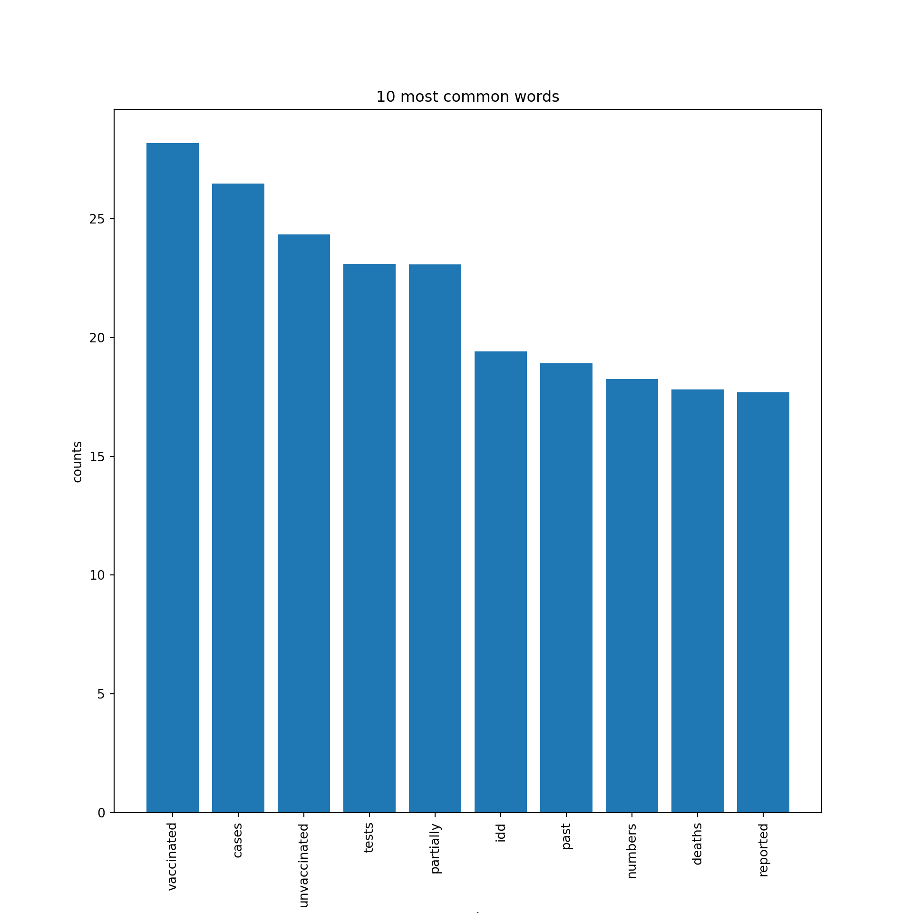

COVID-19 situation in Alberta, Canada
The province of Alberta, Canada, has suffered from the COVID-19 pandemic like all other places. Alberta has gone through cycles of reopening and returning to provincial lock down since April 2020. The province, however, has lifted almost all restrictions and enacted its reopening plan on the recent Canada day when 70% of Alberta population has received at least one dose of approved COVID-19 vaccination.
The navigation of the province through this pandemic was led by the Albertas Chief Medical Officer of Health, Dr.Deena Hinshaw. Dr.Hinshaw usually held public health briefings almost every day during wave 1 to wave 3 of the pandemic, but her communication channel has changed in wave 4 as less public health briefing was held and more tweets were posted on the her account.
For that, I believe we could use Natural Language Processing (NLP) techniques to extract themes and characteristics from Dr.Hinshaws tweet to examine the essence of public health messages since the provincial reopening date, specifically from July 1st to October 31st, 2021.
Text mining and word cloud fundamentals
For this post, we will use text mining and word clouds to initially explore characteristics of the data set. Text mining is an exploratory method for textual data under Natural Language Processing (NLP), a branch of Artificial Intelligence concerning the understanding of words and spoken texts. NLP is also a type of unsupervised machine learning approach to discover hidden structures in the data to inform decisions made by experts of the subject matter.
Word cloud is also a popular way to to communicate findings from textual data in a visually engaging way. The more frequent a word appear in the data set (or corpus) the bigger that word will be in the cloud.
We will use Python to perform this analysis on R platform with
reticulate::repl_python(). First of all, we will be importing necessary modules and twitter data set that we mined from Dr.Hinshaws account withpd.read_csv. There are 538 tweets in total, and we can print out examples of the tweets viatweets_df.Text.head(5).
Show code
#Import necessary modules
import numpy as np #for numpy array
import pandas as pd #for data reading and processing
import matplotlib.pyplot as plt #for plotting
import re #for Regex text cleaning
from wordcloud import WordCloud, STOPWORDS #for word clouds
from nltk.stem import WordNetLemmatizer #to reduce text to base form
from sklearn.feature_extraction import text
from sklearn.feature_extraction.text import CountVectorizer
from sklearn.decomposition import LatentDirichletAllocation as LDA #for topic modeling
import warnings
warnings.filterwarnings("ignore") #suppress the warning that Python kindly gave me
tweets_df = pd.read_csv("text-query-tweets.csv")
tweets_df.shape
# Print out the first rows of papers(538, 4)Show code
print(tweets_df.Text.head(5))0 We all have the ability to take small actions ...
1 As we head into Halloween weekend, I encourage...
2 Sadly, 9 new deaths related to COVID-19 were a...
3 Over the past 24 hours, we IDd 603 new cases ...
4 Here is a summary of the latest #COVID19AB num...
Name: Text, dtype: objectLets clean the text first
After we imported our data into the system, we have to clean our data to get rid of textual elements that we do not need such as punctuation, numbers, as well as convert all words to lower case. Painful as it may be, this has to be done. It took me days (not that much, but I felt it that way) to clean all of this and make sure that no junk is left behind (well, there could be. Do let me know if you find any).
The phrase Garbage in, garbage out is really applicable here in data work context. If you let any junk (corrupted data) in, the most you will get is processed junk. After we cleaned the text, let us print them out again to see what they look like. All numbers are gone. All texts are in lowercase. All URLs and punctuation is gone. Good riddance!
ATTN nerds: Note that in the code below, we will pass the original
Textcolumn intweets_dfto there.subfunction only once. For the second cleaning function onward, we will passtweets_df['Text_processed']instead to stack our text cleaning results on the same column. Yes, I wrote this to remind myself because I struggled on it for hours (half an hour, actually).
Show code
#remove all numbers from the text with list comprehension
tweets_df['Text_processed'] = tweets_df['Text'].map(lambda x: re.sub(r'[0-9]+', '', x))
# Remove punctuation
tweets_df['Text_processed'] = tweets_df['Text_processed'].map(lambda x: re.sub(r'[^\w\s\,\.!?]', '', x))
# Convert the tweets to lowercase
tweets_df['Text_processed'] = tweets_df['Text_processed'].map(lambda x: x.lower())
#Clean out URLs
tweets_df['Text_processed'] = tweets_df['Text_processed'].map(lambda x: re.sub(r"http\S+", "", x))
# Print the processed titles of the first rows
print(tweets_df['Text_processed'].head())0 we all have the ability to take small actions ...
1 as we head into halloween weekend, i encourage...
2 sadly, new deaths related to covid were also ...
3 over the past hours, we idd new cases amp co...
4 here is a summary of the latest covidab number...
Name: Text_processed, dtype: objectSo this is whats happening over time
Show code
#Change datetime format to datetime
tweets_df['Datetime'] = pd.to_datetime(tweets_df['Datetime'])
#Extract month from datetime
tweets_df['Month'] = tweets_df['Datetime'].dt.month
# Group the papers by year
groups = tweets_df.groupby('Month')
# Determine the size of each group
counts = groups.size()
# Visualize the counts as a bar plot
# Vertical lines
plt.axvline(x = 7.0, color = 'forestgreen', label = 'The reopening date', linestyle='--')
plt.axvline(x = 8.0, color = 'firebrick', label = 'Wave 4 started', linestyle='--')
plt.legend(bbox_to_anchor = (1.0, 1), loc = 'upper right')
plt.title("Tweet count across months")
plt.ylabel("Tweet count")
plt.xlabel("Month")
counts.plot()
plt.show()
- The line plot above represents tweet counts across months after the provincial reopening date. The x-axis indicates months and the y-axis indicates the number of twitter post of Dr.Hinshaw. The number of tweet dropped slightly from July to August as cases decreased, but wave 4 of the pandemic started in August as cases were on the rise again. We can see that the number of cases aligns with the number of tweets posted on Dr.Hinshaws account.
Lets see the big picture with word cloud
- Now that we know the frequency of tweets over months, we can plot a word cloud from our processed text to see the big picture of twitter data. There are 114,362 words in total after combining all 538 tweets together. The word cloud below suggests that covid was mentioned the most during the past four months, following by vaccine, new cases, and unvaccinated.
Show code
text_all = " ".join(tweet for tweet in tweets_df.Text_processed)
print ("There are {} words in the combination of all tweets".format(len(text_all)))
#lemmatize all wordsThere are 114362 words in the combination of all tweetsShow code
lemmatizer = WordNetLemmatizer()
text_all = "".join([lemmatizer.lemmatize(i) for i in text_all])
# Create Stopword list:
stopwords_cloud = set(STOPWORDS)
stopwords_cloud.update(["https://", "(/)", "Online:",
"Twitter:", "Join", "us", "virtually",
"pm", ":", "https", "t", "d", "co", "amp", "will"])
#Generate a word cloud image
wordcloud_tweet = WordCloud(stopwords=stopwords_cloud, background_color="white",random_state=7).generate(text_all)
#Display the generated image:
#the matplotlib way:
plt.figure(figsize=[10,10])
plt.imshow(wordcloud_tweet, interpolation='bilinear')
plt.axis("off")(-0.5, 399.5, 199.5, -0.5)Show code
plt.show()- The thing is, word cloud can only provide a rough visual presentation for the characteristics of our textual data. We would need to dive a little bit deeper to graphs and numbers to examine what is truly going on. Let us visualize them all on a bar plot.
Common word bar plot and text preprocessing for topic modeling
Show code
# Helper function to count common words
def plot_10_most_common_words(count_data, count_vectorizer):
import matplotlib.pyplot as plt
words = count_vectorizer.get_feature_names_out()
total_counts = np.zeros(len(words))
for t in count_data:
total_counts+=t.toarray()[0]
count_dict = (zip(words, total_counts))
count_dict = sorted(count_dict, key=lambda x:x[1], reverse=True)[0:10]
words = [w[0] for w in count_dict]
counts = [w[1] for w in count_dict]
x_pos = np.arange(len(words))
plt.bar(x_pos, counts,align='center')
plt.xticks(x_pos, words, rotation=90)
plt.xlabel('words')
plt.ylabel('counts')
plt.title('10 most common words')
plt.show()
#Make your own list of stop words
my_additional_stop_words = ("https://", "(/)", "Online:",
"Twitter:", "Join", "us", "virtually",
"pm", ":", "https", "t", "d", "co", "amp", "today", "new")
stop_words_lda = text.ENGLISH_STOP_WORDS.union(my_additional_stop_words)
# Initialize the count vectorizer with the English stop words
count_vectorizer = CountVectorizer(stop_words=stop_words_lda)
# Fit and transform the processed titles
count_data = count_vectorizer.fit_transform(tweets_df['Text_processed'])
# Visualise the 10 most common words
plot_10_most_common_words(count_data, count_vectorizer)
The bar plot above gave us a more detailed information of which word occurs more frequently than the others. We are taking about the COVID-19 pandemic here, so it is obvious that covid is going to be mentioned the most in Dr.Hinshaws tweet. Vaccinated and cases seem to be reasonable to be mentioned as the second- and third-most frequent words as the government of Alberta has been putting more effort in increasing the vaccination rate and identifying more cases in the province.
We will also create a
count_vectorizermodel with our own list of stopwords (or words that have little meaning such as is, am, are) to prepare our data for Latent Dirichlet Allocation (LDA) topic modeling.
Finally, lets see potential topics from Dr.Hinshaws tweet
Latent Dirichlet Allocation is a powerful natural language processing technique that discovers hidden patterns in topic from unstructured textual data with statistical models (Jelodar et al., 2019).
Here, we can use LDA to discover potential topics among the sea of tweets posted by Dr.Hinshaw to find out what she talked about since the provincial reopening and wave 4 of the pandemic. I have specified the model to extract 8 topics from the data, with 5 words per topics. Note that these numbers are arbitrary chosen.
If we extracted too few topics, we might not be able to capture the whole picture of the data. On the other hand, extracting too much topics could just give us more of the same overlapping themes. We need to find the middle ground.
Show code
# Helper function to print out the topics
def print_topics(model, count_vectorizer, n_top_words):
words = count_vectorizer.get_feature_names_out()
for topic_idx, topic in enumerate(model.components_):
print("\nTopic #%d:" % topic_idx)
print(" ".join([words[i]
for i in topic.argsort()[:-n_top_words - 1:-1]]))
#How many topic and words per topic we want to see
number_topics = 8
number_words = 5
# Create and fit the LDA model
lda = LDA(n_components=number_topics, random_state = 1)
lda.fit(count_data)
# Print the topics found by the LDA modelLatentDirichletAllocation(n_components=8, random_state=1)Show code
print_topics(lda, count_vectorizer, number_words)
Topic #0:
cases tests idd data uptodate
Topic #1:
cases tests completed idd covidab
Topic #2:
vaccinated covid health fully care
Topic #3:
vaccinated unvaccinated covid partially icu
Topic #4:
vaccines health offer care need
Topic #5:
online covidab follow update twitter
Topic #6:
deaths reported sadly covid health
Topic #7:
covid measures health continue workWrapping up here. What can we conclude?
The topics we discovered above can be inferred as follows:
- Topic 0: Data of identified cases must be up to date.
- Topic 1: Case identification (IDd) via testing
- Topic 2: How fully vaccinated people could take care of themselves.
- Topic 3: The proportion of unvaxxed vs vaxxed patients in ICU.
- Topic 4: The availability of vaccine as offerred by the province.
- Topic 5: Dr.Hinshaw urged people to follow covid news online via twitter.
- Topic 6: Covid-related death.
- Topic 7: The province continues to work on health measure against covid.
- Topic 0: Data of identified cases must be up to date.
The insights that we gained could also be further supported by opinion from public health experts as they could provide information at a greater depth into their field.
From what we have discussed so far, we can see that with the right tool, LDA for our case, we could take advantage of the vast availability of textual data that revolves around us in our everyday lives and use that information to deepen our understanding of social phenomena. We could explore how students opinion changed from pre- to post-covid era, or we could use this technique to media transcription of social events such as political protests, election speech, or even product review in the marketing field. Thank you for your reading!